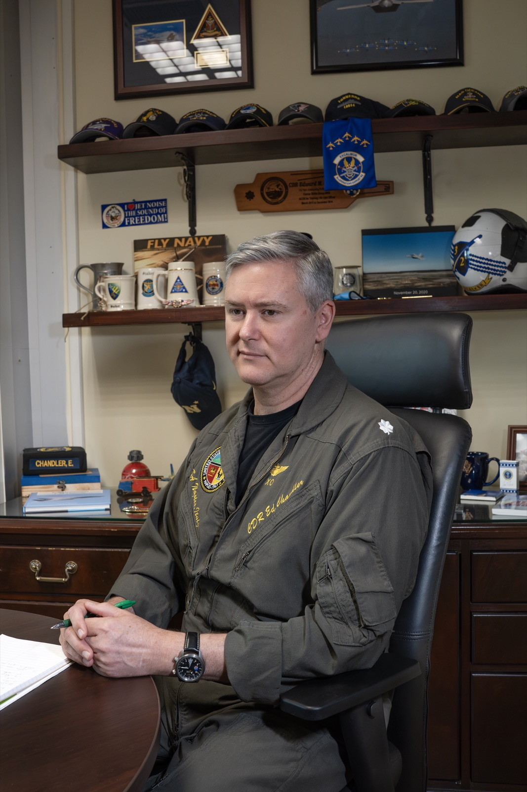

Ed Chandler
Executive coach, leadership advisor and speaker · Founder of PriFly Advisors · Lisbon

I spent 28 years in the U.S. Navy flying fighters, learning from the best as a TOPGUN graduate and training the best as an instructor at the Navy's Strike and Air Warfare Center of Excellence. I helped oversee entire carrier strike groups in the Pacific, led a “first in generations” major basing build-out and move in Japan, helped NATO develop its first Joint Air Power Doctrine, and led at some of the U.S. military's most complex organisations along the way.
Now based in Portugal, but working globally, I help founders and executives build the leadership systems that let organisations perform under pressure, as an executive coach, leadership advisor and speaker. I founded PriFly Advisors to provide both the strategic and tactical advisory I saw many organisations needed to help them grow while escaping the leadership growth trap rapidly scaling or dynamic companies face — grounded in the credibility that only comes from decades of operating in high-stakes environments.
Background
- U.S. Naval Aviator
- ~3,000 fighter hours
- 500+ carrier-arrested landings
- F-14 / FA-18 / F-16
- Commander (Ret.)
- TOPGUN graduate & Adversary
- NSAWC Instructor
- STRIKFORNATO, Oeiras, Portugal
- Air Boss, Centennial of Naval Aviation Parade of Flight
- Air Boss, NAS Oceana, Master Jet Base
- Executive Officer, Naval Support Activity Naples
- Founding Chairman, EU defence startup · Board advisor
Education
- U.S. Naval AcademyBS Economics
- University of FloridaMBA
- Johns Hopkins UniversityCertificate in AI Business Strategy
Credentials
- Lean Six Sigma Black Belt
- Project Management Professional (PMP)
- AgilePM Practitioner
Why PriFly? It's U.S. Navy slang for Primary Flight Control, the aircraft carrier's control tower.
From there the Air Boss oversees every flight operation in the most hostile aviation environment on earth.
Never more than an arm's length away sit representatives from every squadron, ready for any situation, emergency or question. They advise the Boss, back up their teammates in the air and connect them to whatever resources they need. That leadership advisory system is a key to both mission success and flight safety at constant high tempo, and why researchers study it as the model of high reliability.
PriFly Advisors brings the same idea to your company: trusted, experienced support right beside the leader, so the whole team can move fast without breaking.